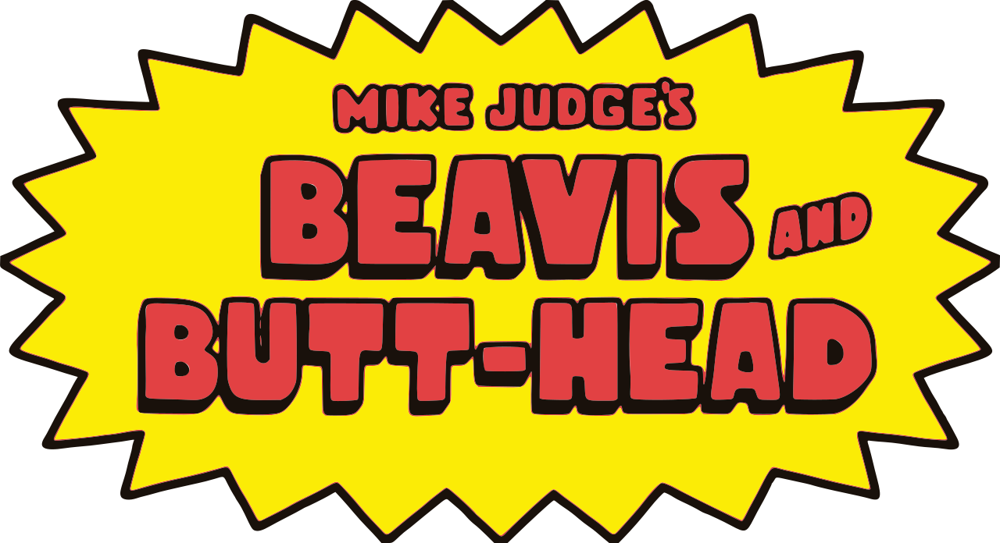

Beavis a Butt-Head je americký animovaný sitcom pro teenagery , který pro MTV vytvořil Mike Judge . Seriál sleduje Beavise a Butt-Heada , oba dabované Judgeem, dvojici dospívajících flákačů charakterizovaných apatií , nedostatkem inteligence , nízkorozpočtovým humorem a láskou k hard rocku a heavy metalu . Původní seriál kombinuje krátké příběhy ze života, v nichž se postavy vydávají na nešťastná dobrodružství a komentují hudební videa ve fiktivním městě Highland v Texasu.
Judge vytvořil Beavise a Butt-Heada při natáčení animovaných krátkých filmů. Dva z těchto krátkých filmů, včetně Frog Baseball , byly odvysílány animační showcase MTV Liquid Television . MTV si objednala celou sérii, která se během sedmi sezón stala jejím nejoblíbenějším pořadem. Původní série skončila v roce 1997, ale byla dvakrát restartována , poprvé v roce 2011 pro MTV a znovu v roce 2022 pro Paramount+ . Od roku 2025 byl druhý restart přesunut na Comedy Central , která seriál obnovila na jedenáctou sérii. Seriál byl obnoven na dvanáctou sérii.
Během svého prvního uvedení si seriál Beavis a Butt-Head vysloužil uznání za satirické komentáře ke společnosti, ale i kritiku za údajný vliv na dospívající. Postavy se staly ikonami popkultury mezi diváky generace X a jejich chichotání a dialogy se staly chytlavými frázemi . Seriál byl adaptován do filmů Beavis a Butt-Head dělají Ameriku (1996) a Beavis a Butt-Head dělají vesmír (2022). Mezi adaptace a navazující produkty patří komiksy, videohry, knihy a hudba.
Beavis a Butt-Head jsou dva neinteligentní dospívající flákači, kteří si téměř neberou ohled na cokoli mimo sebe. Vyznačují se naprostým nedostatkem inteligence , apatií , nízkorozumným humorem , touhou „ skórovat “ a láskou k hard rocku a heavy metalu . Žijí v prázdném domě s gaučem a televizí ve fiktivním Highlandu v Texasu , navštěvují Highland High a pracují v řetězci rychlého občerstvení Burger World. Jejich věk není nikdy specifikován, ale tvůrce Mike Judge uvedl, že jim je „pravděpodobně“ 15. Rolling Stone je popsal jako „hromově hloupé a nesnesitelně ošklivé“. Tráví spoustu času sledováním televize, pitím nezdravých nápojů, jídlem a vydávají se na všední, ubohá a nízkomyslná dobrodružství a nehod, která nejčastěji zahrnují vandalismus , zneužívání , násilí , týrání zvířat nebo jejich touhu „ skórovat “. Podle deníku The Baltimore Sun se Beavis a Butt-Head „nejvíce mýlí, pokud jde o sexualitu a genderové otázky. To nejlepší, co se o nich v tomto ohledu dá říct, je, že jsou to začínající misogynisté .“ V průběhu seriálu si vyvinuli výraznější osobnosti, přičemž Butt-Head je zákeřným vůdcem a Beavis jeho hyperaktivním následovníkem. Když Beavis konzumuje velké množství kofeinu nebo cukru, stává se Cornholiem, hyperaktivním alter egem.
Většina epizod obsahuje sekvence, ve kterých Beavis a Butt-Head sledují hudební videa a nabízejí komentáře. Preferují videa s „explozemi, hlasitými kytarami, křikem a smrtí“ a preferují rockové kapely jako Butthole Surfers , Corrosion of Conformity , Metallica atd. Sekce hudebních videí umožňují postavám poskytovat diegetické komentáře k obsahu videa; Judge řekl, že umožňují postavám říkat „věci, které jsou o něco chytřejší, než by měly být“. Judge improvizoval dialogy na místě, které střihači následně sestříhali spolu s animací ze stávajících záběrů.